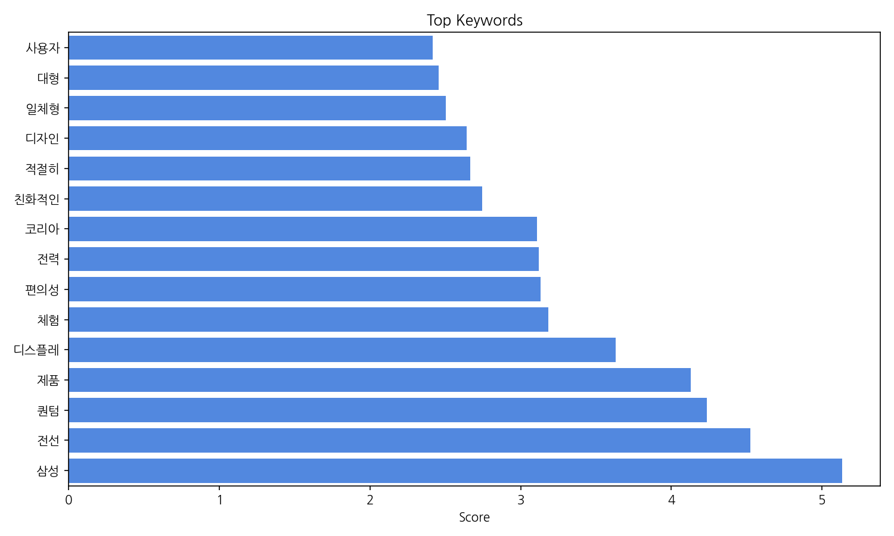
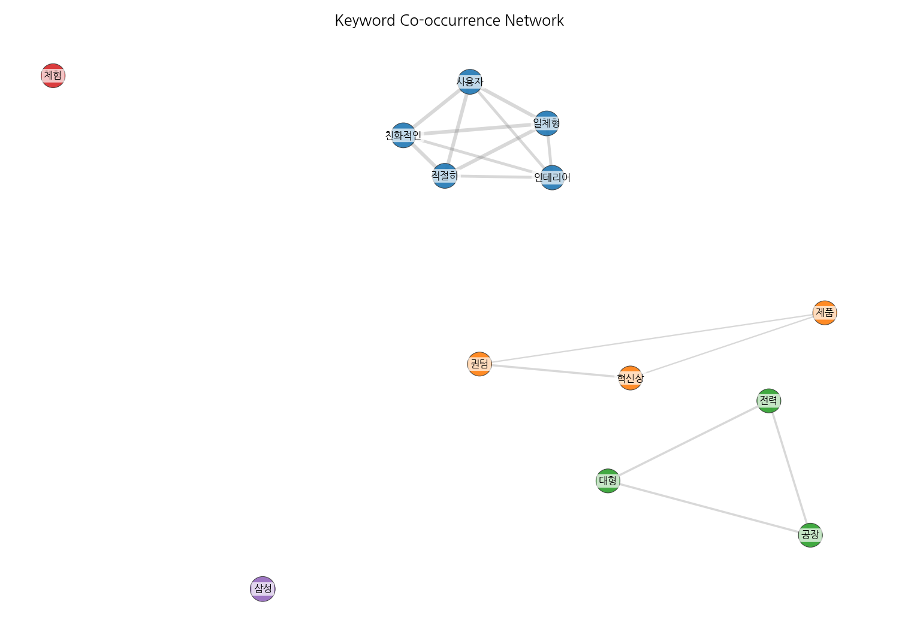
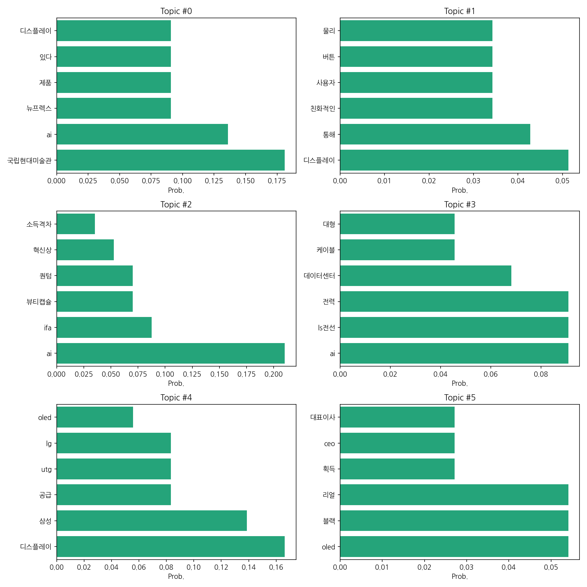
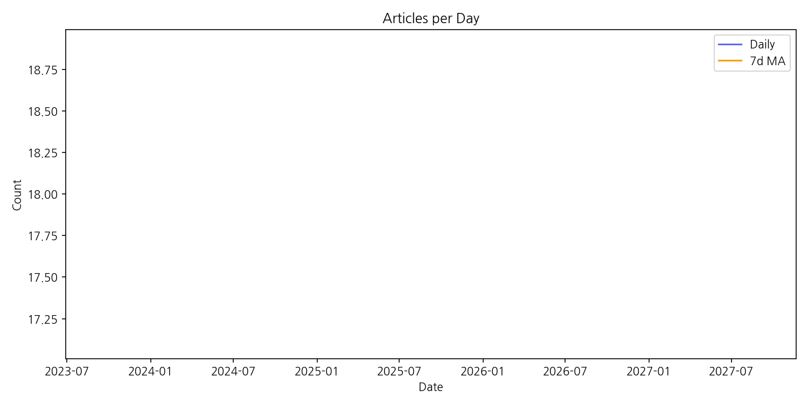

1) 상위 토픽을 3개 주제로 묶어 핵심 맥락을 설명하면 다음과 같습니다. 첫째, AI 기술과 디스플레이 산업의 융합은 국립현대미술관의 AI 전시, 뉴프렉스의 XR 디스플레이 제품, 그리고 삼성, LG 등의 디스플레이 기술 개발 및 공급과 관련된 뉴스를 포함합니다. 둘째, 첨단 기술 및 제품 개발은 AI 기반 뷰티 제품(뷰티캡슐), IFA에서 선보인 퀀텀 기술, LS전선의 전력 케이블 및 데이터센터 관련 기술 등 혁신적인 기술 동향을 보여줍니다. 셋째, 디스플레이 산업 경쟁 및 기술 트렌드는 삼성, LG, 애플 등 주요 기업의 OLED, UTG 등 디스플레이 기술 경쟁과 관련된 뉴스를 다룹니다. 이 세 가지 주제는 모두 최첨단 기술의 발전과 산업적 응용에 초점을 맞추고 있습니다.
2) 최근 변화/스파이크는 데이터에 2025년 9월 8일 하루에 18건의 기사가 집중적으로 발생한 점입니다. 이는 특정 이벤트나 뉴스 발표로 인한 단기적인 집중 현상으로 보이며, 장기적인 추세를 파악하기 위해서는 더 많은 시간 데이터가 필요합니다.
3) 실무 인사이트 3가지:
| Rank | Keyword | Score |
|---|---|---|
| 1 | 삼성 | 5.132 |
| 2 | 전선 | 4.523 |
| 3 | 퀀텀 | 4.235 |
| 4 | 제품 | 4.128 |
| 5 | 디스플레 | 3.629 |
| 6 | 체험 | 3.185 |
| 7 | 편의성 | 3.134 |
| 8 | 전력 | 3.119 |
| 9 | 코리아 | 3.109 |
| 10 | 친화적인 | 2.742 |
| 11 | 적절히 | 2.665 |
| 12 | 디자인 | 2.642 |
| 13 | 일체형 | 2.501 |
| 14 | 대형 | 2.456 |
| 15 | 사용자 | 2.417 |




1) 상위 토픽을 3개 주제로 묶어 핵심 맥락을 설명하면 다음과 같습니다. 첫째, AI 기술과 디스플레이 산업의 융합은 국립현대미술관의 AI 전시, 뉴프렉스의 XR 디스플레이 제품, 그리고 삼성, LG 등의 디스플레이 기술 개발 및 공급과 관련된 뉴스를 포함합니다. 둘째, 첨단 기술 및 제품 개발은 AI 기반 뷰티 제품(뷰티캡슐), IFA에서 선보인 퀀텀 기술, LS전선의 전력 케이블 및 데이터센터 관련 기술 등 혁신적인 기술 동향을 보여줍니다. 셋째, 디스플레이 산업 경쟁 및 기술 트렌드는 삼성, LG, 애플 등 주요 기업의 OLED, UTG 등 디스플레이 기술 경쟁과 관련된 뉴스를 다룹니다. 이 세 가지 주제는 모두 최첨단 기술의 발전과 산업적 응용에 초점을 맞추고 있습니다.
2) 최근 변화/스파이크는 데이터에 2025년 9월 8일 하루에 18건의 기사가 집중적으로 발생한 점입니다. 이는 특정 이벤트나 뉴스 발표로 인한 단기적인 집중 현상으로 보이며, 장기적인 추세를 파악하기 위해서는 더 많은 시간 데이터가 필요합니다.
3) 실무 인사이트 3가지:
| Idea | Target | Value Prop | Score |
|---|---|---|---|
| 차세대 디스플레이 기술 기반 XR 체험 공간 구축 | XR 콘텐츠 개발사, 테마파크 운영사, 광고/마케팅 업체 | 차세대 디스플레이 기술(OLED, MicroLED, UTG 등)을 활용하여 몰입도 높은 XR 체험 공간을 구축하고, 다양한 콘텐츠를 제공하여 소비자에게 혁신적인 경험을 선사합니다. | 4.5 |
| AI 기반 디스플레이 산업 경쟁 분석 및 전략 수립 플랫폼 | 디스플레이 제조업체, 투자사 | AI 기반으로 디스플레이 산업의 기술 트렌드, 경쟁사 분석, 시장 전망 등을 종합적으로 분석하고, 최적의 사업 전략을 제안합니다. 데이터 기반 의사결정을 지원하여 리스크를 최소화하고 수익을 극대화합니다. | 4.2 |
| AI 기반 맞춤형 디스플레이 디자인 플랫폼 | 개인 소비자, 디자이너, 중소 디스플레이 제조업체 | AI 기반으로 개인의 취향과 필요에 맞는 디스플레이 디자인을 자동 생성하고, 제작 과정을 간소화하여 시간과 비용을 절감합니다. 다양한 디자인 옵션을 제공하여 소비자 만족도를 높입니다. | 4.0 |
| AI 기반 에너지 효율 관리 플랫폼 | 대기업, 중소기업, 데이터센터 운영업체 | AI 기반 에너지 소비량 분석 및 예측을 통해 에너지 효율을 최적화하고 비용을 절감합니다. 사용자 친화적인 인터페이스를 제공하여 에너지 관리를 간편하게 합니다. | 3.8 |
| AI 기반 뷰티 제품 맞춤형 추천 서비스 | 뷰티 제품 소비자, 뷰티 업체 | AI 기반 피부 분석 및 개인 맞춤형 뷰티 제품 추천 서비스를 제공하여 소비자의 피부 고민 해결 및 만족도를 높입니다. 뷰티 업체는 정확한 타겟 마케팅을 통해 효율적인 판매 전략을 수립할 수 있습니다. | 3.5 |